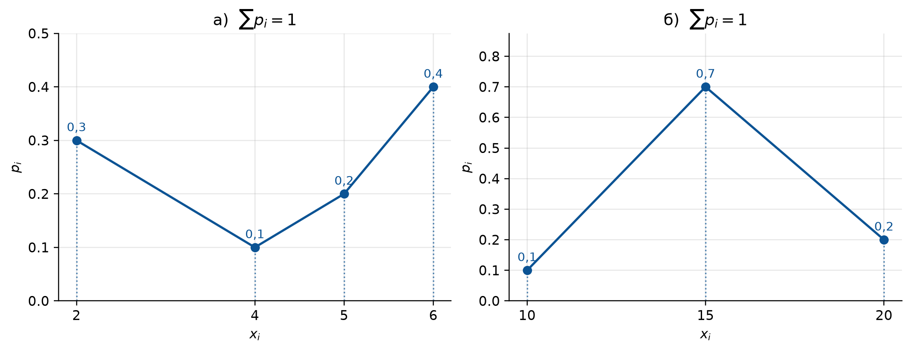
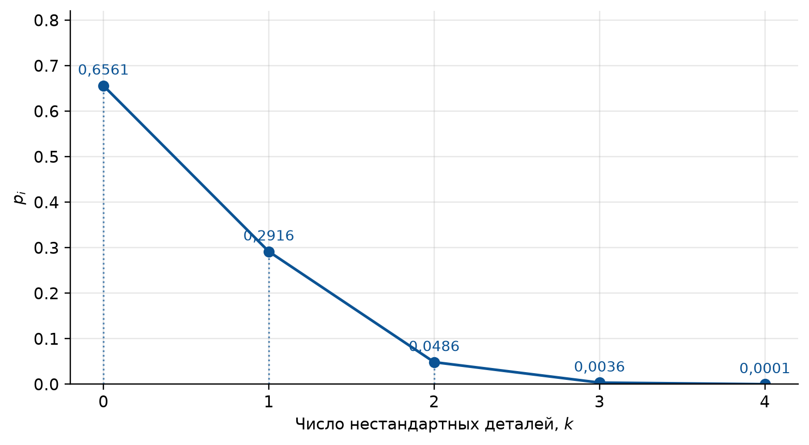
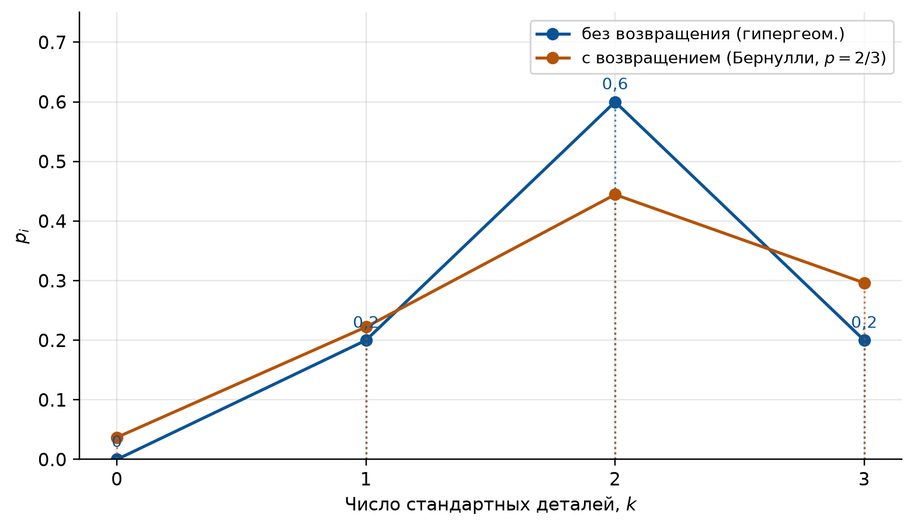
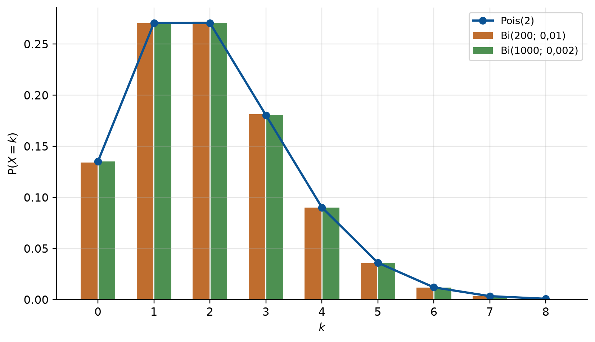
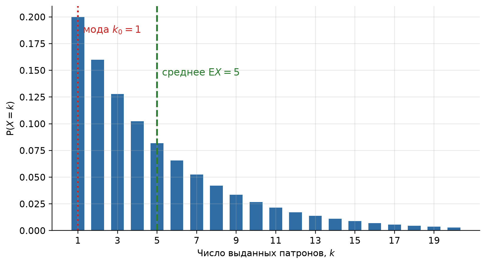
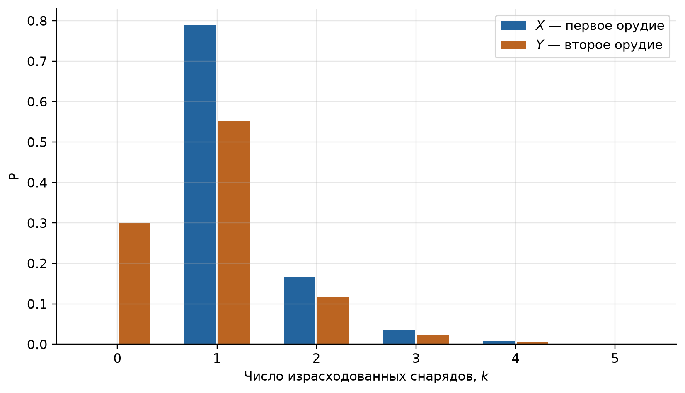
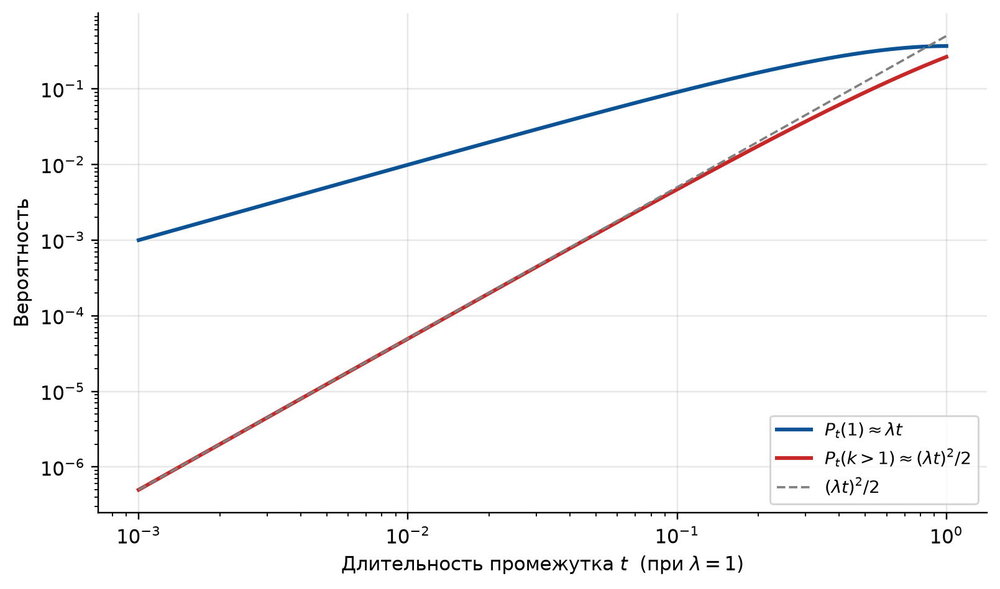

import numpy as np
import matplotlib.pyplot as plt
import sympy as sp
from fractions import Fraction as F
from itertools import combinations
from math import comb, exp, lgamma, log
# Оформление графиков: шрифт с кириллицей и палитра, различимая при печати
PALETTE = ["#0b5394", "#b45309", "#2e7d32", "#7b1fa2", "#c62828", "#00838f"]
plt.rcParams.update({
"font.family": "sans-serif",
"font.sans-serif": ["DejaVu Sans", "Liberation Sans", "Noto Sans", "sans-serif"],
"axes.unicode_minus": False,
"axes.prop_cycle": plt.cycler(color=PALETTE),
"axes.spines.top": False,
"axes.spines.right": False,
"axes.grid": True,
"grid.alpha": 0.3,
"figure.dpi": 110,
"figure.constrained_layout.use": True,
})
# Генератор случайных чисел с фиксированным зерном: результаты воспроизводимы
rng = np.random.default_rng(2026)
def binom_pmf(n, p, k):
"""P(X = k) для X ~ Bi(n, p). Если p — Fraction, ответ получается точной дробью."""
return comb(n, k) * p**k * (1 - p) ** (n - k)
def binom_row(n, p):
"""Весь биномиальный ряд: [P(X = 0), ..., P(X = n)]."""
return [binom_pmf(n, p, k) for k in range(n + 1)]
def pois_pmf(lam, k):
"""P(X = k) для закона Пуассона с параметром lam.
Считается через логарифмы: прямая формула lam^k · e^(-lam) / k! переполняется
уже при lam = 50, k = 199 — числитель и знаменатель огромны по отдельности,
хотя их частное мало.
"""
return exp(k * log(lam) - lam - lgamma(k + 1))
def hyper_row(N, K, n):
"""Гипергеометрический ряд в точных дробях: из N объектов K «удачных», выбираем n."""
return [F(comb(K, k) * comb(N - K, n - k), comb(N, n)) for k in range(n + 1)]
def show_row(values, probs, fmt="{:.4g}"):
"""Ряд распределения в виде двух строк текста и сумма вероятностей."""
head = " ".join(f"{v:>8}" for v in values)
body = " ".join(f"{fmt.format(float(p)):>8}" for p in probs)
return f"X: {head}\np: {body}\nΣp = {float(sum(probs)):.10f}"
def distribution_polygon(ax, values, probs, label=None, color=PALETTE[0], annotate=True):
"""Многоугольник распределения: точки (x_i, p_i), соединённые отрезками.
Пунктирные «ножки» опущены к оси абсцисс. annotate=True подписывает вершины
значениями вероятностей; при нескольких распределениях на одних осях
подписи лучше выключить.
"""
ax.vlines(values, 0, probs, color=color, ls=":", lw=1.1, alpha=0.7)
ax.plot(values, probs, "-o", color=color, ms=6, lw=1.7, label=label)
if annotate:
for x, p in zip(values, probs):
ax.annotate(f"{p:.4g}".replace(".", ","), xy=(x, p), xytext=(0, 7),
textcoords="offset points", ha="center", fontsize=9, color=color)
ax.set_ylim(0, max(probs) * 1.25)
ax.set_xticks(list(values))
ax.set_ylabel("$p_i$")
def duel(n, p1, p2, rng, max_rounds=80):
"""Симуляция n независимых поединков двух орудий (задача 9).
Орудия стреляют по очереди, начиная с первого, до первого попадания.
Возвращает массивы x, y — число снарядов, израсходованных каждым орудием.
"""
x = np.zeros(n, dtype=int)
y = np.zeros(n, dtype=int)
active = np.ones(n, dtype=bool) # поединки, где ещё никто не попал
for _ in range(max_rounds):
if not active.any():
break
x[active] += 1 # стреляет первое орудие
active &= ~(rng.random(n) < p1)
y[active] += 1 # если промах — стреляет второе
active &= ~(rng.random(n) < p2)
return x, y2 Семинар 2. Дискретные случайные величины: биномиальный закон и закон Пуассона
Теория вероятностей и математическая статистика · НИЯУ МИФИ
2.1 Код для этой главы
Все импорты и функции, которые используются в примерах главы, собраны в одной ячейке. Выполните её первой — остальные ячейки опираются на неё.
2.2 Краткая сводка
Случайная величина — величина, которая в результате опыта принимает одно из возможных значений, заранее неизвестно какое. Дискретной называют такую, чьи возможные значения можно перенумеровать (конечное или счётное множество).
Закон распределения дискретной величины \(X\) — перечень возможных значений \(x_1, x_2, \dots\) и их вероятностей \(p_i = \Prob(X = x_i)\). Задаётся таблицей (ряд распределения):
| \(X\) | \(x_1\) | \(x_2\) | … | \(x_n\) |
|---|---|---|---|---|
| \(p\) | \(p_1\) | \(p_2\) | … | \(p_n\) |
Важное уведомление
Контроль. Всегда \[ \sum_i p_i = 1, \tag{2.1}\] потому что события \(\{X = x_i\}\) несовместны и образуют полную группу. Для бесконечного ряда — это сходящийся ряд с суммой 1. Проверяйте Уравнение 2.1 в каждой задаче: почти любая арифметическая ошибка себя тут выдаёт.
Многоугольник распределения — ломаная через точки \((x_i, p_i)\).
Биномиальный закон. \(X\) — число появлений события в \(n\) независимых испытаниях с одинаковой вероятностью успеха \(p\) (\(q = 1 - p\)): \[ P_n(k) = \Prob(X = k) = C_n^k\, p^k q^{\,n-k}, \qquad k = 0, 1, \dots, n. \tag{2.2}\] Обозначение: \(X \sim \mathrm{Bi}(n, p)\).
Закон Пуассона. Если \(n\) велико, а \(p\) мало, то при \(\lambda = np\) \[ P_n(k) \approx \frac{\lambda^k e^{-\lambda}}{k!}, \qquad k = 0, 1, 2, \dots \tag{2.3}\] Параметр \(\lambda\) — среднее число появлений события в \(n\) испытаниях.
Геометрический закон. Испытания повторяются до первого «стоп-события» с вероятностью \(q\) в каждом; \(X\) — номер испытания, на котором оно случилось: \[ \Prob(X = k) = (1-q)^{\,k-1} q, \qquad k = 1, 2, \dots \tag{2.4}\] Проверка Уравнение 2.1 — сумма геометрической прогрессии: \(q/(1 - (1-q)) = 1\).
Гипергеометрический закон. Из \(N\) объектов, среди которых \(K\) «удачных», выбирают \(n\) без возвращения; \(X\) — число удачных среди выбранных: \[ \Prob(X = k) = \frac{C_K^k\, C_{N-K}^{\,n-k}}{C_N^n}. \tag{2.5}\]
Геометрический и гипергеометрический законы выводятся прямо из теорем сложения и умножения (семинар 1) — отдельной теории для них не нужно.
Уведомление
Как отличить одно от другого. Формула Бернулли Уравнение 2.2 требует, чтобы испытания были независимы и вероятность успеха не менялась. Взяли деталь и не вернули — вероятность изменилась, и работает Уравнение 2.5, а не Уравнение 2.2. Ждём до первого промаха — число испытаний не фиксировано, и работает Уравнение 2.4. Первый вопрос к любой задаче этой темы: что здесь за схема?
2.3 Блок A. Разминка
2.3.1 Задача 1 (Гмурман, гл. 4 § 1, № 165)
Дискретная случайная величина \(X\) задана законом распределения:
а)
| \(X\) | 2 | 4 | 5 | 6 |
|---|---|---|---|---|
| \(p\) | 0,3 | 0,1 | 0,2 | 0,4 |
б)
| \(X\) | 10 | 15 | 20 |
|---|---|---|---|
| \(p\) | 0,1 | 0,7 | 0,2 |
Построить многоугольник распределения.
СоветРешение
Надо отложить точки \((x_i, p_i)\) и соединить их отрезками. Перед построением — контроль Уравнение 2.1: \[ \text{а)}\; 0{,}3 + 0{,}1 + 0{,}2 + 0{,}4 = 1, \qquad \text{б)}\; 0{,}1 + 0{,}7 + 0{,}2 = 1. \] Оба ряда корректны.
rows = {
"а)": ([2, 4, 5, 6], [0.3, 0.1, 0.2, 0.4]),
"б)": ([10, 15, 20], [0.1, 0.7, 0.2]),
}
fig, axes = plt.subplots(1, 2, figsize=(9.5, 3.6))
for ax, (name, (xs, ps)) in zip(axes, rows.items()):
distribution_polygon(ax, xs, ps)
ax.set_title(f"{name} $\\sum p_i = {sum(ps):.0f}$")
ax.set_xlabel("$x_i$")
plt.show()
ПредупреждениеТипичная ошибка
Читать значения с ломаной между вершинами. Отрезки не имеют вероятностного смысла: в пункте а) \(\Prob(X = 3) = 0\), потому что значения \(3\) у величины нет, хотя ломаная проходит над этой точкой.
2.3.2 Задача 2 (Гмурман, гл. 4 § 1, № 167)
В партии 10% нестандартных деталей. Наудачу отобраны четыре детали. Написать биномиальный закон распределения дискретной случайной величины \(X\) — числа нестандартных деталей среди четырёх отобранных и построить многоугольник полученного распределения.
СоветРешение
Схема Бернулли: \(n = 4\) независимых отбора, \(p = 0{,}1\), \(q = 0{,}9\). По Уравнение 2.2 \(P_4(k) = C_4^k (0{,}1)^k (0{,}9)^{4-k}\): \[ P_4(0) = 0{,}9^4 = 0{,}6561, \qquad P_4(1) = 4 \cdot 0{,}1 \cdot 0{,}9^3 = 0{,}2916, \] \[ P_4(2) = 6 \cdot 0{,}01 \cdot 0{,}81 = 0{,}0486, \qquad P_4(3) = 4 \cdot 0{,}001 \cdot 0{,}9 = 0{,}0036, \qquad P_4(4) = 0{,}0001. \]
| \(X\) | 0 | 1 | 2 | 3 | 4 |
|---|---|---|---|---|---|
| \(p\) | 0,6561 | 0,2916 | 0,0486 | 0,0036 | 0,0001 |
Контроль Уравнение 2.1 выполнен.
Почему здесь можно применять формулу Бернулли. Детали отбирают из партии, то есть без возвращения, — строго говоря, это Уравнение 2.5. Формула Бернулли годится потому, что партия большая: доля 10% практически не меняется от изъятия четырёх деталей. В задаче 4 партия состоит из шести деталей, и там так уже нельзя.
row = binom_row(4, 0.1)
print(show_row(range(5), row))X: 0 1 2 3 4
p: 0.6561 0.2916 0.0486 0.0036 0.0001
Σp = 1.0000000000fig, ax = plt.subplots(figsize=(7, 3.8))
distribution_polygon(ax, list(range(5)), row)
ax.set_xlabel("Число нестандартных деталей, $k$")
plt.show()
2.3.3 Задача 3 (Гмурман, гл. 4 § 1, № 169)
Две игральные кости одновременно бросают два раза. Написать биномиальный закон распределения дискретной случайной величины \(X\) — числа выпадений чётного числа очков на двух игральных костях.
СоветРешение
Главное в задаче — правильно выделить испытание и вычислить вероятность успеха; формула Бернулли дальше применяется механически.
Испытание — один бросок пары костей, значит \(n = 2\) (бросают дважды).
Успех — «выпало чётное число очков на двух костях», то есть чётное число очков на каждой из них: \[ p = \tfrac12 \cdot \tfrac12 = \tfrac14, \qquad q = \tfrac34. \] Дальше Уравнение 2.2: \[ P_2(0) = \left(\tfrac34\right)^2 = \tfrac{9}{16}, \qquad P_2(1) = C_2^1 \cdot \tfrac14 \cdot \tfrac34 = \tfrac{6}{16}, \qquad P_2(2) = \left(\tfrac14\right)^2 = \tfrac{1}{16}. \]
| \(X\) | 0 | 1 | 2 |
|---|---|---|---|
| \(p\) | 9/16 | 6/16 | 1/16 |
Контроль: \(9/16 + 6/16 + 1/16 = 1\).
Двусмысленность условия. Условие можно прочитать и как «выпала чётная сумма очков» — тогда \(p = 1/2\), и ряд был бы \(1/4\), \(1/2\), \(1/4\). Ответ Гмурмана (\(9/16\), \(6/16\), \(1/16\)) соответствует \(p = 1/4\), то есть книга имеет в виду «на каждой кости чётное». Когда условие допускает два прочтения, зафиксируйте своё явно в начале решения.
Проверка: перебор всех 36 исходов броска пары костей для обеих трактовок.
pairs = [(a, b) for a in range(1, 7) for b in range(1, 7)]
p_both = F(sum((a % 2 == 0) and (b % 2 == 0) for a, b in pairs), 36)
p_sum = F(sum((a + b) % 2 == 0 for a, b in pairs), 36)
print(f"«чётно на каждой кости»: p = {p_both} «чётная сумма»: p = {p_sum}")
for name, p in (("p = 1/4 (чтение книги)", p_both), ("p = 1/2 (другое чтение)", p_sum)):
print(f"\n{name}")
print(show_row(range(3), binom_row(2, p), fmt="{:.4f}"))
print("\nответ книги: 9/16 6/16 1/16 -> верно чтение p = 1/4")«чётно на каждой кости»: p = 1/4 «чётная сумма»: p = 1/2
p = 1/4 (чтение книги)
X: 0 1 2
p: 0.5625 0.3750 0.0625
Σp = 1.0000000000
p = 1/2 (другое чтение)
X: 0 1 2
p: 0.2500 0.5000 0.2500
Σp = 1.0000000000
ответ книги: 9/16 6/16 1/16 -> верно чтение p = 1/4У эксперимента \(36^2 = 1296\) исходов, а величина \(X\) принимает всего три значения. В этом и польза случайной величины: она сворачивает громоздкое пространство исходов до нескольких чисел.
2.3.4 Задача 4 (Гмурман, гл. 4 § 1, № 171)
В партии из шести деталей имеется четыре стандартных. Наудачу отобраны три детали. Составить закон распределения дискретной случайной величины \(X\) — числа стандартных деталей среди отобранных.
СоветРешение
Здесь формула Бернулли не работает. Партия из шести деталей, берут три без возвращения: вероятность вытащить стандартную меняется от извлечения к извлечению. Схема — Уравнение 2.5 с \(N = 6\), \(K = 4\), \(n = 3\).
Возможные значения. Нестандартных всего две, значит среди трёх отобранных стандартных не меньше одной: \(X \in \{1, 2, 3\}\), и значения \(0\) у величины нет. Знаменатель \(C_6^3 = 20\): \[ \Prob(X = 1) = \frac{C_4^1 C_2^2}{20} = \frac{4}{20} = \frac15, \qquad \Prob(X = 2) = \frac{C_4^2 C_2^1}{20} = \frac{12}{20} = \frac35, \] \[ \Prob(X = 3) = \frac{C_4^3 C_2^0}{20} = \frac{4}{20} = \frac15. \]
| \(X\) | 1 | 2 | 3 |
|---|---|---|---|
| \(p\) | 1/5 | 3/5 | 1/5 |
Контроль: \(1/5 + 3/5 + 1/5 = 1\).
Проверка: гипергеометрический ряд в точных дробях и полный перебор всех троек.
row_h = hyper_row(6, 4, 3)
print("гипергеометрический ряд (точные дроби):")
for k, p in enumerate(row_h):
print(f" P(X = {k}) = {p}")
print(f" сумма = {sum(row_h)}")
parts = ["ст", "ст", "ст", "ст", "нест", "нест"]
draws = list(combinations(range(6), 3))
counts = {}
for d in draws:
k = sum(parts[i] == "ст" for i in d)
counts[k] = counts.get(k, 0) + 1
print(f"\nперебор всех C(6,3) = {len(draws)} троек: "
+ " ".join(f"k={k}: {v}/{len(draws)}" for k, v in sorted(counts.items())))гипергеометрический ряд (точные дроби):
P(X = 0) = 0
P(X = 1) = 1/5
P(X = 2) = 3/5
P(X = 3) = 1/5
сумма = 1
перебор всех C(6,3) = 20 троек: k=1: 4/20 k=2: 12/20 k=3: 4/20Сравнение с биномиальным расчётом. Формула Уравнение 2.2 с \(p = 4/6 = 2/3\) дала бы другой ряд — и ненулевую вероятность \(\Prob(X = 0) = 1/27\) значения, которого в этой задаче не бывает (Рисунок 2.3).
row_b = binom_row(3, F(2, 3))
fig, ax = plt.subplots(figsize=(7, 4))
distribution_polygon(ax, list(range(4)), [float(p) for p in row_h],
label="без возвращения (гипергеом.)", color="#0b5394")
distribution_polygon(ax, list(range(4)), [float(p) for p in row_b],
label="с возвращением (Бернулли, $p=2/3$)", color="#b45309",
annotate=False)
ax.set_xlabel("Число стандартных деталей, $k$")
ax.legend(fontsize=9)
plt.show()
ПредупреждениеТипичная ошибка
Применять формулу Бернулли с \(p = 2/3\) к выбору без возвращения из маленькой партии. Признак ошибки — в ряду появляется \(\Prob(X = 0) = 1/27 \ne 0\), хотя вытащить три нестандартные детали из партии, где их всего две, нельзя.
Перечень возможных значений — часть ответа: в таблице должны стоять только \(1, 2, 3\).
2.4 Блок B. Основной
2.4.1 Задача 5 (Гмурман, гл. 4 § 1, № 180)
Магазин получил 1000 бутылок минеральной воды. Вероятность того, что при перевозке бутылка окажется разбитой, равна \(0{,}003\). Найти вероятности того, что магазин получит разбитых бутылок: а) ровно две; б) менее двух; в) более двух; г) хотя бы одну.
СоветРешение
\(n = 1000\) велико, \(p = 0{,}003\) мало, события независимы — применима Уравнение 2.3 с \[ \lambda = np = 1000 \cdot 0{,}003 = 3. \] На лекции разобрана такая же задача с \(\lambda = 1\) (500 билетов).
а) \(\Prob(X = 2) = \dfrac{3^2 e^{-3}}{2!} = \dfrac{9}{2}\,e^{-3} \approx 0{,}224\).
б) «Менее двух» — это \(k = 0\) и \(k = 1\): \[ \Prob(X < 2) = e^{-3} + 3e^{-3} = 4e^{-3} \approx 0{,}1992. \]
в) «Более двух» — только через противоположное событие: прямая сумма \(\Prob(X=3) + \Prob(X=4) + \dots\) бесконечна. \[ \Prob(X > 2) = 1 - \big[\Prob(X<2) + \Prob(X=2)\big] = 1 - (0{,}1992 + 0{,}2240) \approx 0{,}5768. \]
г) «Хотя бы одна» — тоже через противоположное событие (приём семинара 1): \[ \Prob(X \geqslant 1) = 1 - \Prob(X = 0) = 1 - e^{-3} \approx 0{,}950. \]
Итог: четыре пункта — четыре стандартных типа вопроса, и три из них решаются переходом к противоположному событию.
Проверка: пуассоновские вероятности рядом с ответами книги и точным биномиальным расчётом.
lam = 3.0
p = [pois_pmf(lam, k) for k in range(15)]
print(f"λ = np = 1000 · 0.003 = {lam:g}")
print("а) ровно две P(X=2) = %.5f (книга 0,224)" % p[2])
print("б) менее двух P(X<2) = %.5f (книга 0,1992)" % sum(p[:2]))
print("в) более двух P(X>2) = %.5f (книга 0,5766)" % (1 - sum(p[:3])))
print("г) хотя бы одна P(X≥1) = %.5f (книга 0,95)" % (1 - p[0]))
# Точный биномиальный расчёт — насколько хорошо приближение
exact = [binom_pmf(1000, 0.003, k) for k in range(15)]
print("\nточно по Бернулли (n=1000, p=0.003):")
print(" а) %.5f б) %.5f в) %.5f г) %.5f"
% (exact[2], sum(exact[:2]), 1 - sum(exact[:3]), 1 - exact[0]))
print(" максимальное расхождение с Пуассоном: %.2e" % max(abs(a - b) for a, b in zip(p, exact)))λ = np = 1000 · 0.003 = 3
а) ровно две P(X=2) = 0.22404 (книга 0,224)
б) менее двух P(X<2) = 0.19915 (книга 0,1992)
в) более двух P(X>2) = 0.57681 (книга 0,5766)
г) хотя бы одна P(X≥1) = 0.95021 (книга 0,95)
точно по Бернулли (n=1000, p=0.003):
а) 0.22415 б) 0.19870 в) 0.57715 г) 0.95044
максимальное расхождение с Пуассоном: 3.37e-04Расхождение пуассоновского приближения с точным биномиальным расчётом здесь порядка \(10^{-4}\).
2.4.2 Задача 6 (Гмурман, гл. 4 § 1, № 177 и 178)
а) Устройство состоит из 1000 элементов, работающих независимо один от другого. Вероятность отказа любого элемента в течение времени \(T\) равна \(0{,}002\). Найти вероятность того, что за время \(T\) откажут ровно три элемента.
б) Станок-автомат штампует детали. Вероятность того, что изготовленная деталь окажется бракованной, равна \(0{,}01\). Найти вероятность того, что среди 200 деталей окажется ровно четыре бракованных.
СоветРешение
Обе задачи решаются по Уравнение 2.3, и в обеих одно и то же \(\lambda\): \[ \text{а)}\; \lambda = 1000 \cdot 0{,}002 = 2, \qquad \text{б)}\; \lambda = 200 \cdot 0{,}01 = 2. \]
а) \(P_{1000}(3) = \dfrac{2^3 e^{-2}}{3!} = \dfrac{8 \cdot 0{,}13534}{6} \approx 0{,}180\).
б) \(P_{200}(4) = \dfrac{2^4 e^{-2}}{4!} = \dfrac{16 \cdot 0{,}13534}{24} \approx 0{,}090\).
Главный вывод. У задач разные \(n\) (1000 и 200) и разные \(p\) (0,002 и 0,01), но одинаковое произведение. Пуассоновский ответ зависит только от \(\lambda = np\): по отдельности \(n\) и \(p\) в формулу не входят. Распределение в обеих задачах одно и то же, а ответы разные лишь потому, что спрашивают про разные \(k\).
Проверка: пуассоновское приближение против точного биномиального расчёта.
for name, n, p_, k in (("а)", 1000, 0.002, 3), ("б)", 200, 0.01, 4)):
lam_ = n * p_
print(f"{name} n = {n:5d} p = {p_:<6g} λ = np = {lam_:g} "
f"Пуассон P({k}) = {pois_pmf(lam_, k):.5f} "
f"точно = {binom_pmf(n, p_, k):.5f}")а) n = 1000 p = 0.002 λ = np = 2 Пуассон P(3) = 0.18045 точно = 0.18063
б) n = 200 p = 0.01 λ = np = 2 Пуассон P(4) = 0.09022 точно = 0.09022ks = list(range(9))
fig, ax = plt.subplots(figsize=(7.4, 4.2))
ax.bar([k - 0.16 for k in ks], [binom_pmf(200, 0.01, k) for k in ks],
width=0.3, color="#b45309", alpha=0.85, label="$\\mathrm{Bi}(200;\\,0{,}01)$")
ax.bar([k + 0.16 for k in ks], [binom_pmf(1000, 0.002, k) for k in ks],
width=0.3, color="#2e7d32", alpha=0.85, label="$\\mathrm{Bi}(1000;\\,0{,}002)$")
ax.plot(ks, [pois_pmf(2, k) for k in ks], "-o", color="#0b5394", lw=2, ms=6,
label="$\\mathrm{Pois}(2)$")
ax.set_xlabel("$k$")
ax.set_ylabel("$\\mathsf{P}(X = k)$")
ax.set_xticks(ks)
ax.legend(fontsize=9)
plt.show()
ПредупреждениеТипичная ошибка
Подставлять в формулу Пуассона \(n\) или \(p\) вместо их произведения. Параметр закона — \(\lambda = np\), и только он.
2.4.3 Задача 7 (Гмурман, гл. 4 § 1, № 173)
Вероятность того, что стрелок попадёт в мишень при одном выстреле, равна \(0{,}8\). Стрелку выдаются патроны до тех пор, пока он не промахнётся. Требуется: а) составить закон распределения дискретной случайной величины \(X\) — числа патронов, выданных стрелку; б) найти наивероятнейшее число \(k_0\) выданных стрелку патронов.
СоветРешение
Новая схема: число испытаний не задано заранее, стрельба идёт до первого промаха. Формула Бернулли неприменима — в ней \(n\) фиксировано.
а) Стрелку выдан ровно \(k\)-й патрон, если первые \(k-1\) выстрелов были попаданиями, а \(k\)-й — промахом. Выстрелы независимы, поэтому по теореме умножения \[ \Prob(X = k) = \underbrace{0{,}8 \cdots 0{,}8}_{k-1} \cdot 0{,}2 = 0{,}8^{\,k-1} \cdot 0{,}2, \qquad k = 1, 2, \dots \] Это Уравнение 2.4 с \(q = 0{,}2\).
| \(X\) | 1 | 2 | 3 | … | \(k\) | … |
|---|---|---|---|---|---|---|
| \(p\) | 0,2 | 0,16 | 0,128 | … | \(0{,}8^{k-1}\cdot 0{,}2\) | … |
Контроль Уравнение 2.1 — сумма бесконечной геометрической прогрессии: \[ \sum_{k=1}^{\infty} 0{,}8^{\,k-1} \cdot 0{,}2 = \frac{0{,}2}{1 - 0{,}8} = 1. \;\checkmark \]
б) Последовательность \(0{,}8^{k-1}\cdot 0{,}2\) строго убывает по \(k\), значит наибольшая вероятность — у самого первого значения: \[ k_0 = 1. \]
Почему ответ кажется странным. Стрелок хороший, а вероятнее всего ему выдадут один патрон? Да: \(\Prob(X = 1) = 0{,}2\) больше любой другой отдельной вероятности, хотя и мало само по себе. Величина \(k_0\) — это мода (самое вероятное значение), а не среднее. Среднее здесь \(\E X = 1/q = 1/0{,}2 = 5\) — оно и отвечает интуиции. Для скошенных распределений мода и среднее далеко расходятся (Рисунок 2.5). Математическое ожидание — тема следующего занятия.
Ряд убывает при любой вероятности попадания меньше 1, поэтому у геометрического распределения мода всегда равна 1, а среднее может быть сколь угодно большим.
Проверка: сумма ряда, мода и среднее — аналитически и симуляцией.
q = 0.2
row_g = [(1 - q) ** (k - 1) * q for k in range(1, 41)]
print(show_row(range(1, 6), row_g[:5], fmt="{:.4f}"), " (первые пять членов)")
print(f"\nсумма ряда (40 членов): {sum(row_g):.8f} аналитически: {q / (1 - (1 - q)):.0f}")
print(f"мода k0 = {1 + int(np.argmax(row_g))} среднее E[X] = 1/q = {1 / q:.0f}")
# симуляция: сколько патронов до первого промаха
trials = rng.random((200_000, 60)) < 0.8 # True = попадание
first_miss = np.argmin(trials, axis=1) + 1 # номер первого промаха
print(f"симуляция: мода = {np.bincount(first_miss).argmax()}, "
f"среднее = {first_miss.mean():.3f}")X: 1 2 3 4 5
p: 0.2000 0.1600 0.1280 0.1024 0.0819
Σp = 0.6723200000 (первые пять членов)
сумма ряда (40 членов): 0.99986708 аналитически: 1
мода k0 = 1 среднее E[X] = 1/q = 5
симуляция: мода = 1, среднее = 5.004ks = np.arange(1, 21)
fig, ax = plt.subplots(figsize=(7.4, 4))
ax.bar(ks, row_g[:20], color="#0b5394", alpha=0.85, width=0.65)
ax.axvline(1, color="#c62828", ls=":", lw=2)
ax.axvline(5, color="#2e7d32", ls="--", lw=2)
ax.text(1.25, 0.185, "мода $k_0 = 1$", color="#c62828", fontsize=11)
ax.text(5.25, 0.145, "среднее $\\mathsf{E}X = 5$", color="#2e7d32", fontsize=11)
ax.set_xlabel("Число выданных патронов, $k$")
ax.set_ylabel("$\\mathsf{P}(X = k)$")
ax.set_xticks(ks[::2])
plt.show()
ПредупреждениеТипичная ошибка
Путать «наивероятнейшее число» со средним и отвечать \(k_0 = 5\). Наивероятнейшее значение — то, у которого наибольшая вероятность.
2.4.4 Задача 8 (Гмурман, гл. 4 § 1, № 183)
Вероятность выигрыша по одному лотерейному билету \(p = 0{,}01\). Сколько нужно купить билетов, чтобы выиграть хотя бы по одному из них с вероятностью \(P\), не меньшей \(0{,}95\)?
СоветРешение
Обратная задача: дана вероятность, найти \(n\). Схема — «хотя бы один» через противоположное событие, \(\Prob(A) = 1 - \Prob(\bar A)\), как в семинаре 1, но с пуассоновским приближением.
Вероятность выигрыша мала, число билетов заведомо велико, поэтому число выигрышных билетов приближённо распределено по Пуассону с \(\lambda = np\). Полагая \(k = 0\) в Уравнение 2.3, получаем \(\Prob(X = 0) = e^{-\lambda}\), откуда \[ P = 1 - \Prob(X = 0) = 1 - e^{-\lambda} \geqslant 0{,}95 \;\Longleftrightarrow\; e^{-\lambda} \leqslant 0{,}05. \] Функция \(e^{-x}\) убывает, поэтому неравенство выполняется при \[ \lambda \geqslant -\ln 0{,}05 = 2{,}9957 \approx 3. \] По таблице Гмурман берёт \(e^{-3} = 0{,}05\), то есть \(\lambda \geqslant 3\). Наконец, \(\lambda = np\) и \(p = 0{,}01\): \[ n \geqslant \frac{3}{0{,}01} = 300. \]
Ответ: не менее 300 билетов.
Точный расчёт. Без приближения условие имеет вид \(1 - 0{,}99^n \geqslant 0{,}95\), откуда \(n \geqslant \ln 0{,}05/\ln 0{,}99 = 298{,}07\), то есть \(n \geqslant 299\). Пуассоновское приближение ошиблось на один билет из трёхсот — это и есть его точность. Ответ 300 заведомо безопасен: билетов куплено с запасом.
# пуассоновское приближение
lam_min = -log(0.05)
print(f"Пуассон: λ ≥ -ln 0.05 = {lam_min:.4f} → n ≥ λ/p = {lam_min / 0.01:.1f} → n = 300")
# точный биномиальный расчёт
n_exact = min(n for n in range(1, 2000) if 1 - 0.99**n >= 0.95)
print(f"Точно: n ≥ ln 0.05 / ln 0.99 = {log(0.05) / log(0.99):.2f} → n = {n_exact}")
for n in (298, 299, 300):
print(f" n = {n}: P(хотя бы один выигрыш) = {1 - 0.99**n:.5f}")Пуассон: λ ≥ -ln 0.05 = 2.9957 → n ≥ λ/p = 299.6 → n = 300
Точно: n ≥ ln 0.05 / ln 0.99 = 298.07 → n = 299
n = 298: P(хотя бы один выигрыш) = 0.94996
n = 299: P(хотя бы один выигрыш) = 0.95046
n = 300: P(хотя бы один выигрыш) = 0.95096
ПредупреждениеТипичная ошибка
Потерять смену знака при логарифмировании: \(e^{-\lambda} \leqslant 0{,}05\) равносильно \(-\lambda \leqslant \ln 0{,}05\), то есть \(\lambda \geqslant -\ln 0{,}05\).
2.5 Блок C. Повышенная сложность
2.5.1 Задача 9 (Гмурман, гл. 4 § 1, № 174)
Из двух орудий поочерёдно ведётся стрельба по цели до попадания одним из орудий. Вероятность попадания в цель первым орудием равна \(0{,}3\), вторым — \(0{,}7\). Начинает стрельбу первое орудие. Составить законы распределения дискретных случайных величин \(X\) и \(Y\) — числа израсходованных снарядов соответственно первым и вторым орудием.
СоветРешение
Из одного эксперимента получаются две разные случайные величины.
Обозначим \(p_1 = 0{,}3\), \(q_1 = 0{,}7\) — вероятности попадания и промаха первого орудия, \(p_2 = 0{,}7\), \(q_2 = 0{,}3\) — второго.
Ключевое наблюдение. Стрельба идёт раундами: выстрел первого орудия, затем, если промах, выстрел второго. Раунд завершает стрельбу, если попало хоть одно орудие; стрельба продолжается только после двух промахов, вероятность чего \[ r = q_1 q_2 = 0{,}7 \cdot 0{,}3 = 0{,}21. \] Значит обе величины образуют геометрические прогрессии со знаменателем \(0{,}21\) и различаются только первым членом.
Величина \(X\) (снаряды первого орудия). Первое орудие израсходует один снаряд, если оно попало сразу, либо промахнулось, но попало второе: \[ \Prob(X = 1) = p_1 + q_1 p_2 = 0{,}3 + 0{,}7 \cdot 0{,}7 = 0{,}79. \] Чтобы первое орудие израсходовало \(k\) снарядов, нужно \(k-1\) безрезультатных раундов, а затем тот же исход: \[ \Prob(X = k) = 0{,}79 \cdot 0{,}21^{\,k-1}, \qquad k = 1, 2, \dots \]
Величина \(Y\) (снаряды второго орудия). Она начинается с нуля: если первое орудие попало первым же выстрелом, второе не стреляло вовсе: \[ \Prob(Y = 0) = p_1 = 0{,}3. \] Второе орудие израсходует один снаряд, если оно выстрелило и попало, либо выстрелило, промахнулось, а первое попало в следующем раунде: \[ \Prob(Y = 1) = q_1 p_2 + q_1 q_2 p_1 = 0{,}49 + 0{,}21 \cdot 0{,}3 = 0{,}553, \] и далее \(\Prob(Y = k) = 0{,}553 \cdot 0{,}21^{\,k-1}\), \(k \geqslant 1\).
Контроль Уравнение 2.1 для обеих: \[ \sum_{k \geqslant 1} 0{,}79 \cdot 0{,}21^{k-1} = \frac{0{,}79}{1 - 0{,}21} = 1, \qquad 0{,}3 + \sum_{k \geqslant 1} 0{,}553 \cdot 0{,}21^{k-1} = 0{,}3 + \frac{0{,}553}{0{,}79} = 0{,}3 + 0{,}7 = 1. \]
Проверка: формулы и симуляция 200 000 поединков функцией duel.
p1, q1, p2, q2 = 0.3, 0.7, 0.7, 0.3
r = q1 * q2
X1, Y0, Y1 = p1 + q1 * p2, p1, q1 * p2 + r * p1
print(f"знаменатель прогрессии r = q1·q2 = {r:.2f}")
print(f"P(X=1) = {X1:.3f} P(Y=0) = {Y0:.3f} P(Y=1) = {Y1:.3f}")
print(f"контроль ΣP(X) = {X1 / (1 - r):.6f} ΣP(Y) = {Y0 + Y1 / (1 - r):.6f}")
xs, ys = duel(200_000, p1, p2, rng)
print("\n k=0 k=1 k=2 k=3")
print("X сим. — " + " ".join(f"{(xs == k).mean():.4f}" for k in (1, 2, 3)))
print("X теор. — " + " ".join(f"{X1 * r**(k - 1):.4f}" for k in (1, 2, 3)))
print(f"Y сим. {(ys == 0).mean():.4f} " + " ".join(f"{(ys == k).mean():.4f}" for k in (1, 2, 3)))
print(f"Y теор. {Y0:.4f} " + " ".join(f"{Y1 * r**(k - 1):.4f}" for k in (1, 2, 3)))знаменатель прогрессии r = q1·q2 = 0.21
P(X=1) = 0.790 P(Y=0) = 0.300 P(Y=1) = 0.553
контроль ΣP(X) = 1.000000 ΣP(Y) = 1.000000
k=0 k=1 k=2 k=3
X сим. — 0.7890 0.1663 0.0355
X теор. — 0.7900 0.1659 0.0348
Y сим. 0.2987 0.5538 0.1161 0.0248
Y теор. 0.3000 0.5530 0.1161 0.0244ks = np.arange(0, 6)
px = np.array([0.0] + [X1 * r ** (k - 1) for k in range(1, 6)])
py = np.array([Y0] + [Y1 * r ** (k - 1) for k in range(1, 6)])
fig, ax = plt.subplots(figsize=(7.4, 4.2))
ax.bar(ks - 0.17, px, width=0.32, color="#0b5394", alpha=0.9, label="$X$ — первое орудие")
ax.bar(ks + 0.17, py, width=0.32, color="#b45309", alpha=0.9, label="$Y$ — второе орудие")
ax.set_xlabel("Число израсходованных снарядов, $k$")
ax.set_ylabel("$\\mathsf{P}$")
ax.set_xticks(ks)
ax.legend(fontsize=10)
plt.show()
ПредупреждениеТипичная ошибка
Начинать ряд \(Y\) с единицы. Первое орудие стреляет всегда, поэтому \(X \geqslant 1\); второе может не выстрелить ни разу, поэтому \(Y \geqslant 0\).
2.5.2 Задача 10 (Гмурман, гл. 4 § 1, № 175)
Два бомбардировщика поочерёдно сбрасывают бомбы на цель до первого попадания. Вероятность попадания в цель первым бомбардировщиком равна \(0{,}7\), вторым — \(0{,}8\). Вначале сбрасывает бомбы первый бомбардировщик. Составить первые четыре члена закона распределения дискретной случайной величины \(X\) — числа сброшенных бомб обоими бомбардировщиками (т. е. ограничиться возможными значениями \(X\), равными 1, 2, 3 и 4).
СоветРешение
Сюжет тот же, что в задаче 9, но вопрос другой: там считали снаряды каждого орудия отдельно (две величины), здесь — общее число бомб (одна величина). \(X\) — номер броска, на котором случилось первое попадание.
Броски чередуются: нечётные — первый бомбардировщик (\(0{,}7\)), чётные — второй (\(0{,}8\)). Значит, \(X = k\) означает «первые \(k-1\) бросков — промахи, \(k\)-й — попадание»: \[ \Prob(X = 1) = 0{,}7; \] \[ \Prob(X = 2) = 0{,}3 \cdot 0{,}8 = 0{,}24; \] \[ \Prob(X = 3) = 0{,}3 \cdot 0{,}2 \cdot 0{,}7 = 0{,}042; \] \[ \Prob(X = 4) = 0{,}3 \cdot 0{,}2 \cdot 0{,}3 \cdot 0{,}8 = 0{,}0144. \]
| \(X\) | 1 | 2 | 3 | 4 |
|---|---|---|---|---|
| \(p\) | 0,7 | 0,24 | 0,042 | 0,0144 |
Общий член. Ряд не геометрический: вероятность попадания меняется от броска к броску, и вероятности не образуют одной прогрессии. Прогрессия появляется, если смотреть парами: знаменатель \(0{,}3 \cdot 0{,}2 = 0{,}06\), и \[ \Prob(X = 2m-1) = 0{,}06^{\,m-1} \cdot 0{,}7, \qquad \Prob(X = 2m) = 0{,}06^{\,m-1} \cdot 0{,}24. \] Контроль Уравнение 2.1 по обеим подпоследовательностям сразу: \[ \sum_{m \geqslant 1} 0{,}06^{m-1}(0{,}7 + 0{,}24) = \frac{0{,}94}{1 - 0{,}06} = 1. \]
Проверка: первые члены, сумма полного ряда и симуляция.
a, b = 0.7, 0.8
row = [a, (1 - a) * b, (1 - a) * (1 - b) * a, (1 - a) * (1 - b) * (1 - a) * b]
print(show_row(range(1, 5), row, fmt="{:.4f}"), " (первые четыре члена, сумма < 1 — ряд продолжается)")
print(f"\nзнаменатель по парам: {(1 - a) * (1 - b):.2f}")
print(f"сумма полного ряда: {(a + (1 - a) * b) / (1 - (1 - a) * (1 - b)):.6f}")
# симуляция: 30 бросков с чередующимися вероятностями попадания
n = 300_000
p_by_step = np.array([a if s % 2 == 0 else b for s in range(30)])
hits = rng.random((n, 30)) < p_by_step
first = np.argmax(hits, axis=1) + 1
print("\nсимуляция:", " ".join(f"P(X={k}) = {(first == k).mean():.4f}" for k in range(1, 5)))X: 1 2 3 4
p: 0.7000 0.2400 0.0420 0.0144
Σp = 0.9964000000 (первые четыре члена, сумма < 1 — ряд продолжается)
знаменатель по парам: 0.06
сумма полного ряда: 1.000000
симуляция: P(X=1) = 0.7001 P(X=2) = 0.2406 P(X=3) = 0.0415 P(X=4) = 0.01412.5.3 Задача 11 (Гмурман, гл. 4 § 1, № 182)
Доказать, что сумма вероятностей числа появлений события в независимых испытаниях, вычисленных по закону Пуассона, равна единице.
СоветРешение
Требуется проверить Уравнение 2.1 для Уравнение 2.3, то есть что закон Пуассона действительно является законом распределения.
Множитель \(e^{-\lambda}\) от \(k\) не зависит и выносится за знак суммы: \[ \sum_{k=0}^{\infty} P_n(k) = \sum_{k=0}^{\infty} \frac{\lambda^k e^{-\lambda}}{k!} = e^{-\lambda} \sum_{k=0}^{\infty} \frac{\lambda^k}{k!}. \] Оставшаяся сумма — ряд Маклорена для экспоненты, \[ e^{x} = \sum_{k=0}^{\infty} \frac{x^k}{k!}, \] сходящийся при любом \(x\); при \(x = \lambda\) он равен \(e^{\lambda}\). Значит, \[ \sum_{k=0}^{\infty} P_n(k) = e^{-\lambda} \cdot e^{\lambda} = e^{0} = 1. \qquad \blacksquare \]
Зачем это доказывать. Гмурман замечает, что утверждение следует из того, что сумма вероятностей событий полной группы равна единице. Для биномиального закона это так: события «ровно \(k\) успехов», \(k = 0, \dots, n\), образуют полную группу, и Уравнение 2.1 выполняется по построению. Но пуассоновские вероятности Уравнение 2.3 — приближение биномиальных, и то, что приближённые числа тоже дают в сумме ровно 1, требует отдельной проверки. Выкладка выше её и делает.
Проверка: частичные суммы ряда при разных \(\lambda\).
for lam_ in (0.5, 1, 3, 10, 50):
s = sum(pois_pmf(lam_, k) for k in range(200))
print(f"λ = {lam_:>4}: Σ P(X=k), k ≤ 199 = {s:.15f}")λ = 0.5: Σ P(X=k), k ≤ 199 = 1.000000000000000
λ = 1: Σ P(X=k), k ≤ 199 = 1.000000000000000
λ = 3: Σ P(X=k), k ≤ 199 = 1.000000000000000
λ = 10: Σ P(X=k), k ≤ 199 = 1.000000000000003
λ = 50: Σ P(X=k), k ≤ 199 = 0.9999999999999982.5.4 Задача 12 (Гмурман, гл. 4 § 2, № 184)
Показать, что формулу Пуассона, определяющую вероятность появления \(k\) событий за время длительностью \(t\), \[ P_t(k) = \frac{(\lambda t)^k e^{-\lambda t}}{k!}, \tag{2.6}\] можно рассматривать как математическую модель простейшего потока событий; другими словами, показать, что формула Пуассона отражает все свойства простейшего потока.
Напоминание. Потоком событий называют последовательность событий, наступающих в случайные моменты времени. Простейшим (пуассоновским) называют поток, обладающий тремя свойствами: стационарность (вероятность появления \(k\) событий зависит только от \(k\) и длительности \(t\) промежутка, но не от его начала), отсутствие последействия (не зависит от того, что было до начала промежутка), ординарность (появление двух и более событий за малое время пренебрежимо маловероятно по сравнению с появлением одного). Интенсивностью \(\lambda\) называют среднее число событий в единицу времени.
СоветРешение
Проверяем три свойства по очереди.
Стационарность. В правой части Уравнение 2.6 стоят только \(k\), \(t\) и постоянная \(\lambda\). Момент начала промежутка в формулу не входит — значит, вероятность зависит лишь от \(k\) и длительности \(t\). ✓
Отсутствие последействия. Формула Уравнение 2.6 не содержит никакой информации о том, что происходило до начала промежутка: нет ни числа предшествующих событий, ни моментов их наступления. ✓
Ординарность. Положим \(k = 0\) и \(k = 1\): \[ P_t(0) = e^{-\lambda t}, \qquad P_t(1) = \lambda t\, e^{-\lambda t}. \] Тогда вероятность появления более одного события \[ P_t(k > 1) = 1 - \big[P_t(0) + P_t(1)\big] = 1 - (1 + \lambda t)\,e^{-\lambda t}. \] Разложим \(e^{-\lambda t}\) в ряд Маклорена. После приведения подобных \[ P_t(k > 1) = \frac{(\lambda t)^2}{2} - \frac{(\lambda t)^3}{3} + \dots \] Сравним с \(P_t(1) \approx \lambda t\) при малых \(t\): отношение \[ \frac{P_t(k>1)}{P_t(1)} \approx \frac{\lambda t}{2} \xrightarrow[t \to 0]{} 0. \] Значит, при малых \(t\) вероятность появления более одного события пренебрежимо мала по сравнению с вероятностью одного. ✓
Все три свойства выполнены, поэтому Уравнение 2.6 — математическая модель простейшего потока. \(\blacksquare\)
Параметр \(\lambda\) сменил смысл. В Уравнение 2.3 было \(\lambda = np\) — среднее число появлений за \(n\) испытаний. В Уравнение 2.6 \(\lambda\) — интенсивность, среднее число событий в единицу времени, а роль числа испытаний играет время:
| Схема испытаний | Поток событий |
|---|---|
| \(n\) — число испытаний | \(t\) — длительность промежутка |
| \(\lambda = np\) | \(\lambda t\) |
Проверка: разложение в ряд и предел отношения в sympy.
t_s, lam_s = sp.symbols("t lambda", positive=True)
more_than_one = 1 - (1 + lam_s * t_s) * sp.exp(-lam_s * t_s)
print("P_t(k>1) =", sp.series(more_than_one, t_s, 0, 5))
print("\nординарность: P(k>1)/P(1) →",
sp.limit(more_than_one / (lam_s * t_s * sp.exp(-lam_s * t_s)), t_s, 0), " при t → 0")P_t(k>1) = lambda**2*t**2/2 - lambda**3*t**3/3 + lambda**4*t**4/8 + O(t**5)
ординарность: P(k>1)/P(1) → 0 при t → 0tt = np.logspace(-3, 0, 200)
lam_v = 1.0
p1_ = lam_v * tt * np.exp(-lam_v * tt)
pmore = 1 - (1 + lam_v * tt) * np.exp(-lam_v * tt)
fig, ax = plt.subplots(figsize=(7.2, 4.2))
ax.loglog(tt, p1_, lw=2, color="#0b5394", label="$P_t(1) \\approx \\lambda t$")
ax.loglog(tt, pmore, lw=2, color="#c62828", label="$P_t(k>1) \\approx (\\lambda t)^2/2$")
ax.loglog(tt, (lam_v * tt) ** 2 / 2, ls="--", lw=1.2, color="gray", label="$(\\lambda t)^2/2$")
ax.set_xlabel("Длительность промежутка $t$ (при $\\lambda = 1$)")
ax.set_ylabel("Вероятность")
ax.legend(fontsize=9, loc="lower right")
plt.show()
ПредупреждениеТипичная ошибка
Искать в Уравнение 2.6 число испытаний \(n\) и вероятность \(p\). Их здесь нет: вместо \(np\) стоит \(\lambda t\).
2.6 Задачи для самостоятельной работы
- (Гмурман, № 166.) Устройство состоит из трёх независимо работающих элементов. Вероятность отказа каждого элемента в одном опыте равна \(0{,}1\). Составить закон распределения числа отказавших элементов в одном опыте.
- (Гмурман, № 170.) В партии из 10 деталей имеется 8 стандартных. Наудачу отобраны две детали. Составить закон распределения числа стандартных деталей среди отобранных. Сравните схему с задачей 4.
- (Гмурман, № 172.) После ответа студента на вопросы экзаменационного билета экзаменатор задаёт дополнительные вопросы и прекращает, как только студент обнаруживает незнание заданного вопроса. Вероятность того, что студент ответит на любой заданный дополнительный вопрос, равна \(0{,}9\). Требуется: а) составить закон распределения числа заданных дополнительных вопросов; б) найти наивероятнейшее число \(k_0\) заданных вопросов.
- (Гмурман, № 181 б.) Найти среднее число \(\lambda\) бракованных изделий в партии, если вероятность того, что в партии содержится хотя бы одно бракованное изделие, равна \(0{,}95\). Число бракованных изделий распределено по закону Пуассона. (Указание: принять \(e^{-3} = 0{,}05\).)
СоветОтветы
- \(\mathrm{Bi}(3;\,0{,}1)\): \(0{,}729\); \(0{,}243\); \(0{,}027\); \(0{,}001\).
- Гипергеометрическое: \(\Prob(X=0) = 1/45\), \(\Prob(X=1) = 16/45\), \(\Prob(X=2) = 28/45\). В отличие от задачи 4, значение \(X = 0\) здесь возможно: нестандартных деталей две, и отбирают две.
- а) \(\Prob(X = k) = 0{,}9^{k-1}\cdot 0{,}1\), \(k = 1, 2, \dots\); б) \(k_0 = 1\) (схема задачи 7).
- \(1 - e^{-\lambda} = 0{,}95 \Rightarrow \lambda = 3\) (схема задачи 8).